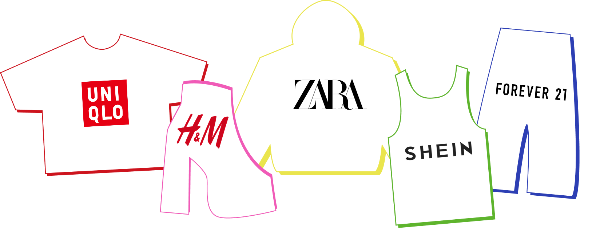

How cheap clothes come at hidden costs.
By Team MEEP MEEP
In 2023, the fast fashion industry was estimated to be worth $122.98 billion and is expected to reach $197.5 billion by 2028. At its core, fast fashion is the production of low-quality clothes that mimic popular-styles and trends sold at rock-bottom prices. This makes it easy for consumers to purchase stylish items, which promotes frequent shopping and quick turnovers in trends and fashion collections. The main goal of fast fashion is to essentially get people to spend more money on clothes they use for shorter times
Today, we will be examining the social, environmental and ethical impact of the 5 most dominant fast fashion brands of today, Shein, Forever21, Zara, H&M and Uniqlo.

Where fast fashion production is located
Fast fashion may be sold in polished malls and online storefronts, but its production network stretches far beyond where most people shop. This map reveals where our featured brands manufacture across the globe. A strong cluster appears across Asia, where brands rely on established manufacturing networks, lower labour costs, and weaker worker protections to produce clothing at scale.
Cheap clothing depends on cheap labour. Behind every low-priced, ‘steal’ clothing in fast fashion, there are workers who are sacrificing their health, time, and life to make that possible
To demonstrate this, let’s compare the daily wage of a worker versus the price of a single item they produce per brand. In every case, a worker cannot afford a single piece of clothing with their entire day's pay.
Below is the cost without even taking into account the number of hours a worker works in a day and assuming they work the typical 23 working days per month, which is highly unlikely
This comparison shows the disparity between how much brands charge for their clothing compared to how much they pay their workers. For a worker from any one of the 5 brands to buy one $20 item, they would need to work for almost 4 days, spending nothing else.
However, when we take a closer look, we see the differences in work hours and fluctuating wages they impose on their workforce across different factories, taking advantage of labour laws in the global south.
Use the map and hover over each country to see the daily wage and daily working hours these workers are subjugated to. Click the buttons to toggle between brands to see the differences between them.
But fast fashion doesn’t just impact workers, it’s changing our planet too. Every single stage of its production costs our planet irreparable damage, all to satisfy corporate profit and the desire to be stylish.
Every year, these five brands alone churn out over hundred thousands CO2 emmisions per factory.
Drag the slider to see the CO2 emmisions over the years
To produce this much, the water requirement is staggering. Below we compare the amount of water used by each brand each year to maintain their production.
The red line at the bottom represents 1 year of life for a family of four. The bars represent 1 year of production.